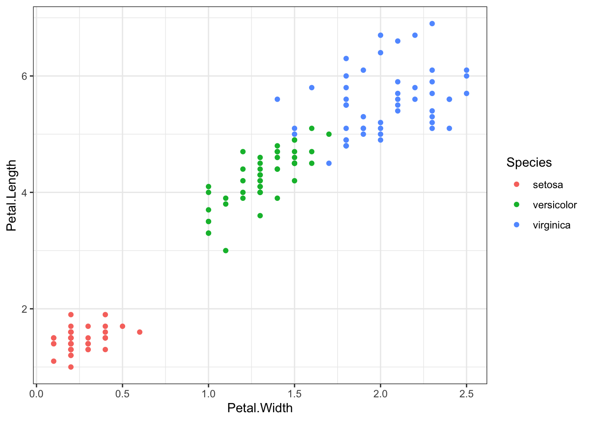
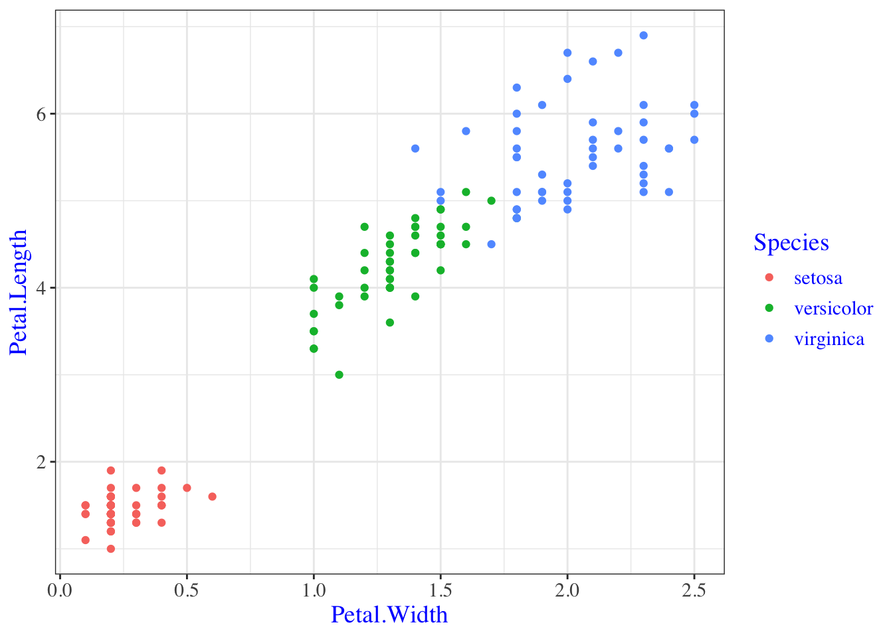
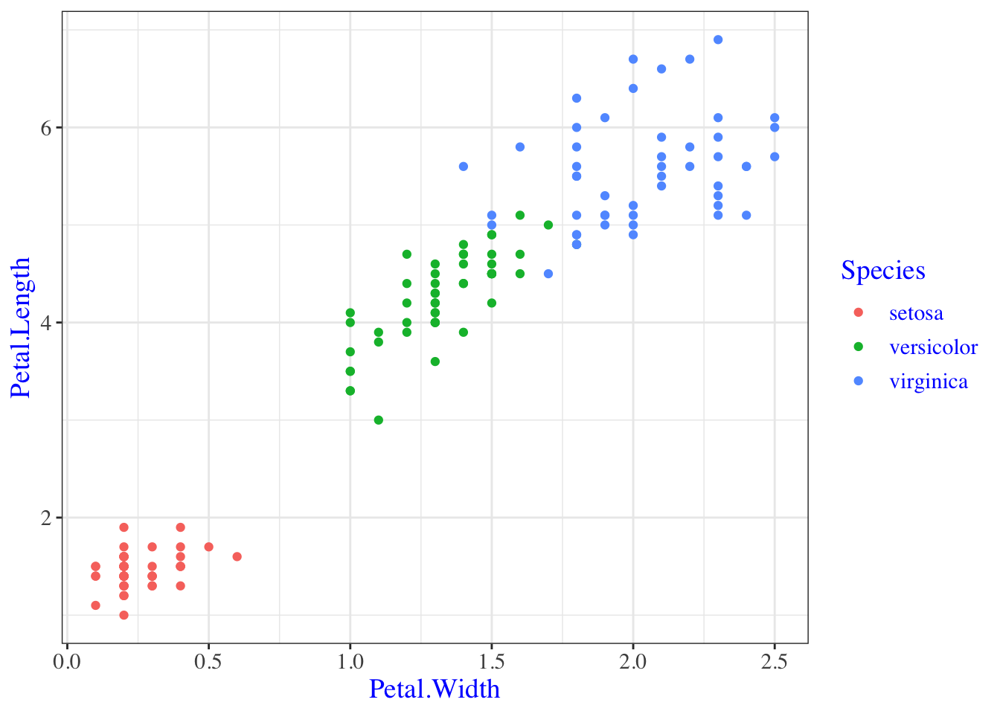
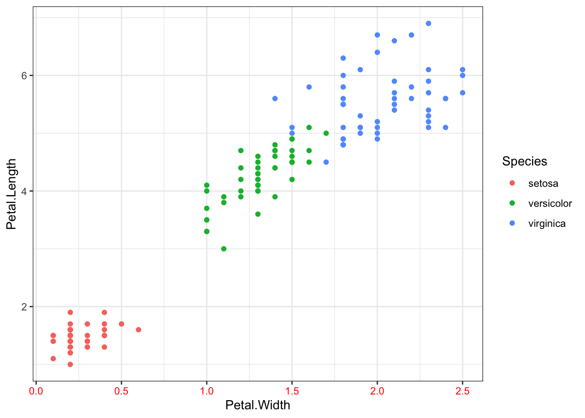
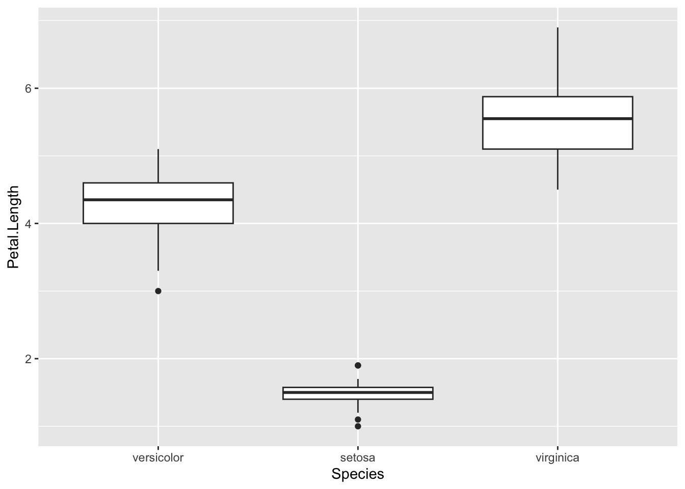
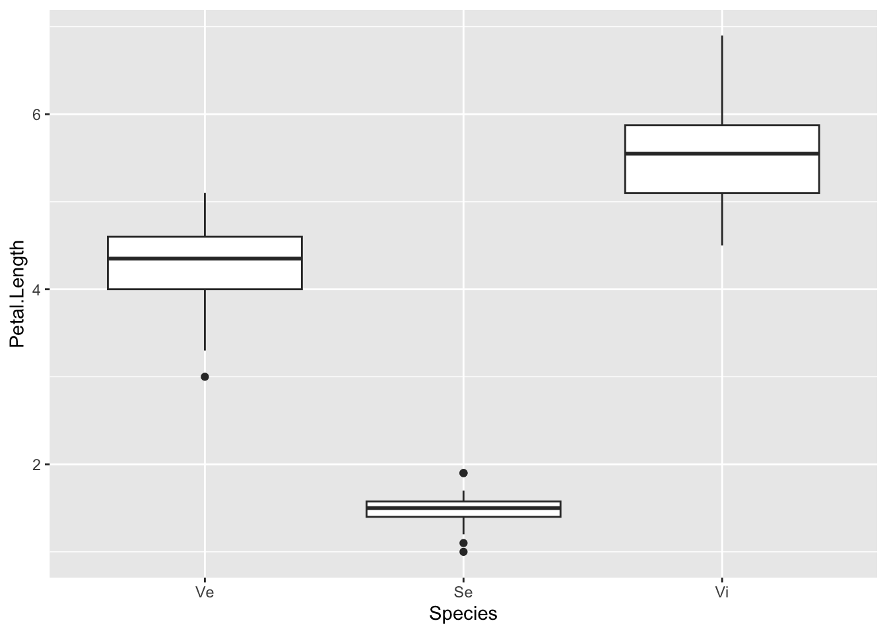
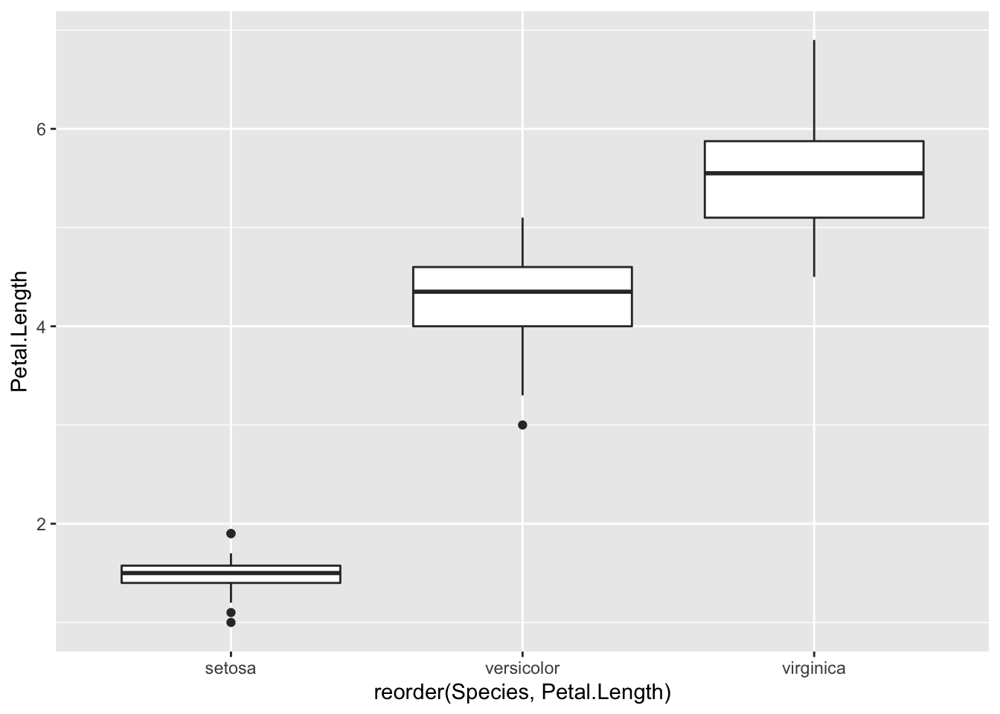
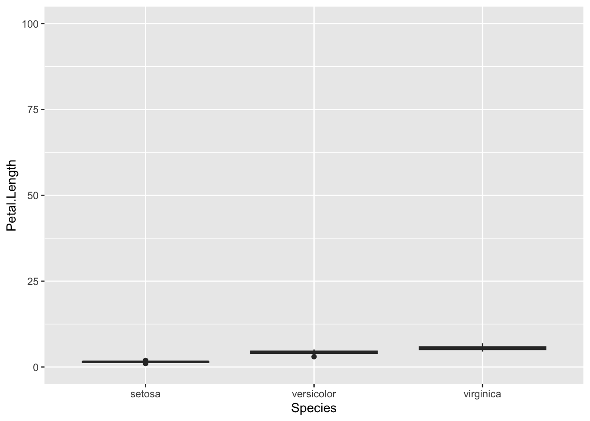
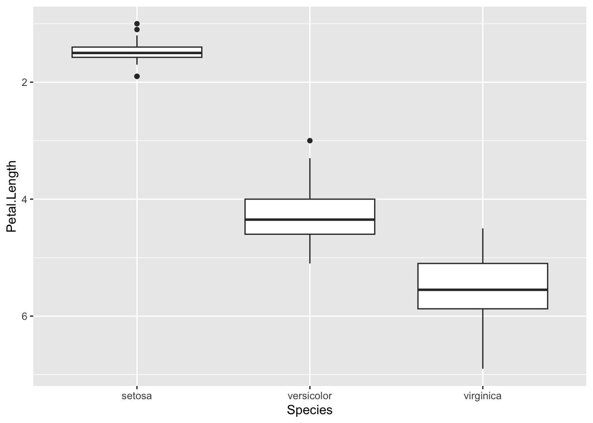
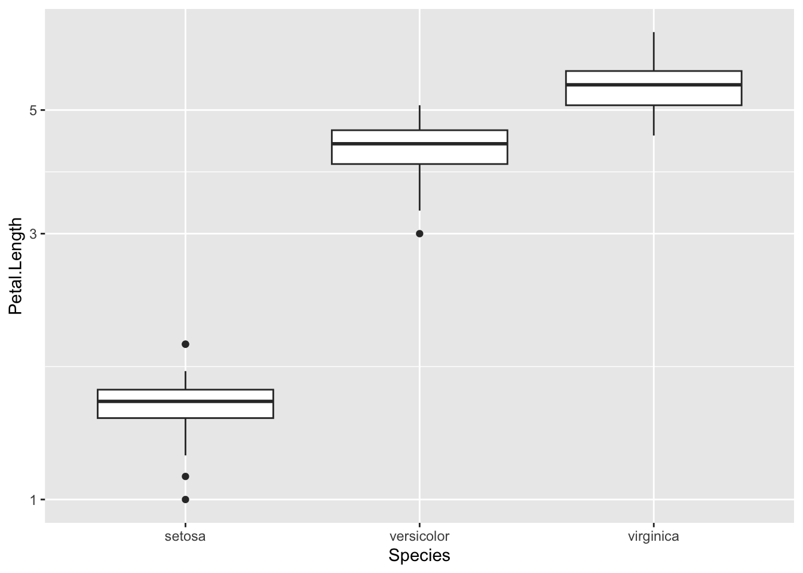

4 Visual Customisation
- Questions:
- How do I make my plot look the way I want it to?
- Objectives:
- Explain how themes are applied
- Explain how individual plot elements can be changed
- Set the order and limits on scales keypoints:
- There are a wide range of themes that can be modified
- The
theme()function allows us to set individual theme elements - The
scalefamily of functions allows us to specify the scales
4.1 Themes
At some point you’re going to want to custom/personalise or generally improve the look of your plots. So far we’ve concentrated on getting the data shown in the right place, now we’ll look at finessing the plot to make a final version. ggplot2 and a companion package ggthemes have a wide variety of ready to go themes that can be applied and modified.
Applying a built-in theme is very easy, we can think of the theme as a new layer to add. This code will give us a standard plot
p <- ggplot(iris) + aes(Petal.Width,Petal.Length) + geom_point(aes(colour=Species))
p
Let’s add a theme_bw() layer. Which is really a simple theme that takes away all colour you didn’t explicitly ask for - so the points stay coloured.
p <- ggplot(iris) + aes(Petal.Width,Petal.Length) + geom_point(aes(colour=Species))
p + theme_bw()
4.2 Quiz
ggplotitself only has a few themes built in. Trytheme_minimal(),theme_grey()andtheme_dark().- Use the docs at https://github.com/jrnold/ggthemes to examine the themes that are available in this external package. Try loading the package and using some of the themes. Don’t miss
theme_excel().
4.3 The theme() function
Changing the theme wholesale by applying a theme layer is great, but you’ll usually want to change individual theme elements. This is possible too, and is done using the theme() function.
p <- ggplot(iris) + aes(Petal.Width,Petal.Length) + geom_point(aes(colour=Species))
p + theme_bw() + theme(text = element_text(family = "Times", colour = "blue", size = 14))
So here we built a plot, applied a theme layer and then modified an element of that theme. The theme layer is really just a list of plot elements and their current settings. Conceptually it looks like this:
- line = element_line(colour="black", size=0.5),
- text = element_text(family="Arial", colour="black", size=12)With the thing on the left of the equals being the attribute of the plot e.g the line or the text and the thing on the right of the equals being the function that does the changing. Each plot element can be reset by using the proper function and setting the options for that function appropriately. Just like we did above!
Some of the attributes apply across the whole plot, this one text applies to all text in the plot.
p + theme_bw() + theme(text = element_text(family = "Times", colour = "blue", size = 14))
But this one axis.text.x changes only the x axis text.
p + theme_bw() + theme(axis.text.x = element_text(colour="red"))
A full list of plot elements and the functions to set them are in http://docs.ggplot2.org/dev/vignettes/themes.html and here are the most important ones. The options for each element function are in the ggplot2 docs http://docs.ggplot2.org/dev/element.html
line = element_line(),
rect = element_rect(),
text = element_text(),
axis.text = element_text(),
strip.text = element_text(),
axis.line = element_blank(),
axis.text.x = element_text(),
axis.text.y = element_text(),
axis.ticks = element_line(),
axis.title.x = element_text(),
axis.title.y = element_text(),
axis.ticks.length = unit(),
axis.ticks.margin = unit(),
legend.background = element_rect(),
legend.margin = unit(),
legend.key = element_rect(),
legend.key.size = unit(),
legend.text = element_text(),
legend.title = element_text(),
legend.position = "right",
legend.justification = "center",
panel.background = element_rect(),
panel.border = element_blank(),
panel.grid.major = element_line(),
panel.grid.minor = element_line(),
panel.margin = unit(),
strip.background = element_rect(),
strip.text.x = element_text(),
strip.text.y = element_text(),
plot.background = element_rect(),
plot.title = element_text(),
plot.margin = unit(),
Putting these together if we want to make our legend text a bit bigger, and use Helvetica font, in green, we’d follow this scheme:
- Use the list above to find which element is the right one for legend text. Here it will be
legend.text - Read off the element function for the
legend.text, here it iselement_text() - Use the ggplot2 docs to see the options for that element function: http://docs.ggplot2.org/dev/element.html
- Form the theme function:
theme( legend.text = element_text(size = 20, family="Helvetica", colour="green") ) - Add it to the plot
plot + theme( legend.text = element_text(size = 20, family="Helvetica", colour="green") )
4.4 Changing the order of categories in the plot
The list of options above doesn’t provide anything we can use to specify the order in which the different categories are displayed. Instead this is done with a new type of function, the scale family of functions. By using the scale_x_discrete() function and options (especially the limits) we can set the way the scale on the axis is set. For a discrete (or categorical) variable this includes the order.
p <- ggplot(iris) + aes(Species,Petal.Length) + geom_boxplot()
p + scale_x_discrete(limits=c("versicolor", "setosa", "virginica"))
You can change labels in the same way with the labels option,
p + scale_x_discrete(limits=c("versicolor", "setosa", "virginica"), labels=c("Ve", "Se", "Vi"))
You can reorder based on the value of some other value, e.g get the boxes ordered by the Petal.Length variable by squeezing in the reorder() function. Unusually, this is done in the aes() function in the aesthetic layer. We want to reorder the x-axis so we use the reorder() function on that. The syntax is reorder(<variable to reorder>, <variable to reorder by), so here we’re changing the order of the Species on the x-axis according to what is in Petal.Length.
p <- ggplot(iris) + aes(x=reorder(Species, Petal.Length), y=Petal.Length ) + geom_boxplot()
p
4.5 Text formatting in plots
Biological notation is frustrating because it uses text formatting to express differences between things. So the wild-type allele is referred to in italics or underlined capitals whereas a mutant is referred to in italic or underlined lower case. Programming languages have a hard time with text formatting, so tend to deal with plain text.
ggplotis no exception and there isn’t a way to make your labels italic. The best way to achieve this, therefore is to save the plot as a.svgfile, then edit the labels manually in a graphics program like Inkscape.
4.6 Changing the limits of a continuous scale
The scale_x_discrete() function has analogous functions for the y-axis and for continuous axes - I.E. scale_y_discrete() and scale_x_continuous() and scale_y_continuous(). The most common thing to want to do with a continuous scale is set the limits, the start and end points.
p <- ggplot(iris) + aes(Species, Petal.Length ) + geom_boxplot()
p + scale_y_continuous(limits =c(0,100))
It is also possible to change the scale to a logarithmic one with the scale_y_log10(), function, reverse it with scale_y_reverse() functions.
p + scale_y_reverse()
p + scale_y_log10()
4.7 Quiz
- Using the iris dataset, create a boxplot of Petal Width for each species
- Overlay the actual data by adding a jitter plot
- Remove the grey background of the plot (Hint: try
element_blank()andpanel.background) - Change the Y axis title to ‘Petal Width’
- Remove the X axis title
- Make the species names bigger
- Make the thick panel grid lines black, remove the thin panel grid lines.
- Set the order of species to ‘virginica’, ‘setosa’, ‘versicolor’ Extra Credit: Set the values on the species axis to ‘Iris virginica’, ‘Iris setosa’, ‘Iris versicolor’